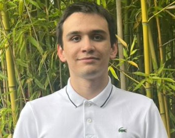

Étudiant en BUT Science des Données à Niort, passionné par les statistiques et l'analyse de données.

Aujourd'hui, je poursuis un BUT Science des données pour approfondir mes compétences en mathématiques appliquées, statistiques, programmation et visualisation. Mon objectif est de devenir un professionnel capable de transformer des données complexes en informations utiles et compréhensibles.